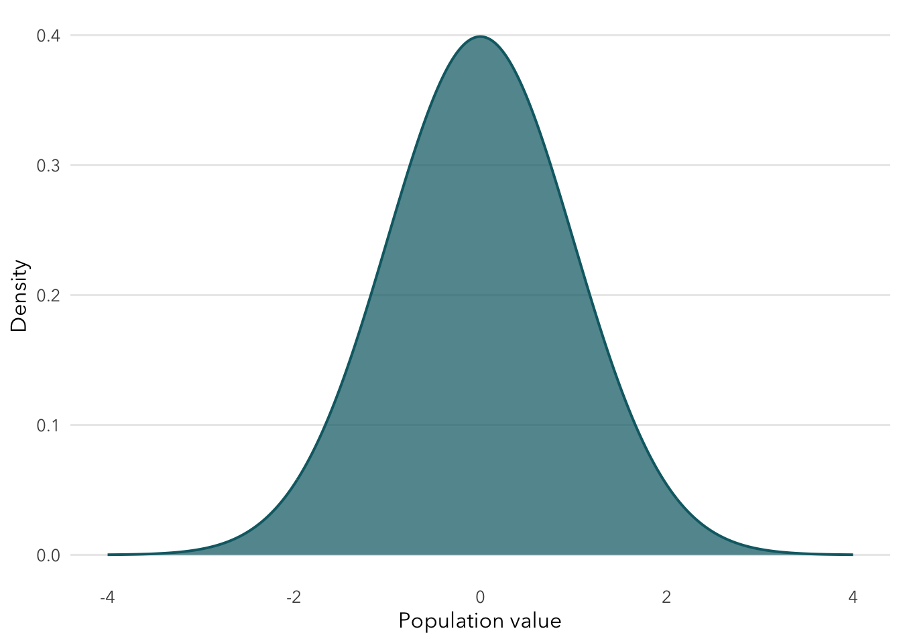
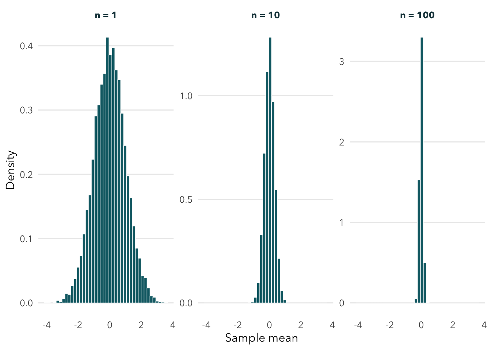
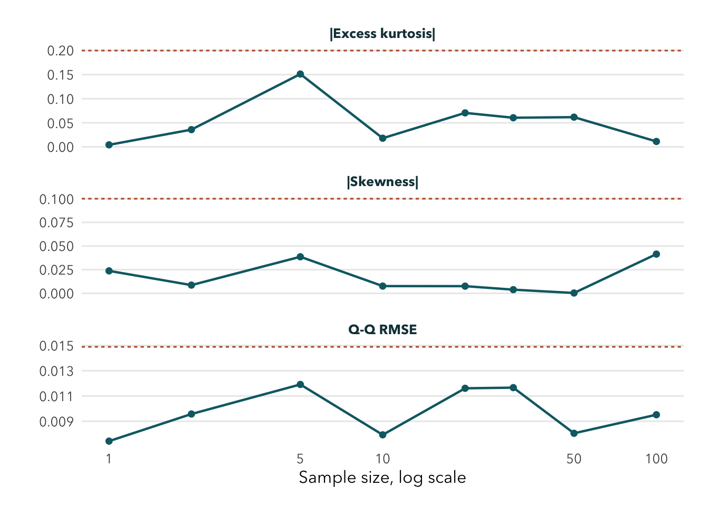

Show R code
plot_parent_population(population)
How quickly does Normal happen when the parent population is already Standard Normal? It happens immediately. A linear combination of independent Normal variables is Normal, so the sample mean is exactly Normal at every positive sample size. The smallest defensible answer is therefore \(n=1\).
For independent \(X_i \sim N(0,1)\),
\[ \bar X_n \sim N\left(0,\frac{1}{n}\right). \]
The center is 0 and the standard error is \(1/\sqrt{n}\). No approximation is involved.
At every evaluated \(n\), I generated 10,000 independent sample means with seed 631. The simulated diagnostics calibrate the amount of random fluctuation expected even when Normality is exact.
normal_table <- page_results[page_results$n %in% selected_n, c("n", "simulated_mean", "simulated_se", "relative_se_error", "skewness", "excess_kurtosis", "qq_rmse")]
names(normal_table) <- c("n", "Mean", "Empirical SE", "Relative SE error", "Skewness", "Excess kurtosis", "Q-Q RMSE")
knitr::kable(normal_table, digits = 4, row.names = FALSE)| n | Mean | Empirical SE | Relative SE error | Skewness | Excess kurtosis | Q-Q RMSE |
|---|---|---|---|---|---|---|
| 1 | -0.0063 | 1.0042 | 0.0042 | -0.0237 | 0.0043 | 0.0074 |
| 10 | 0.0022 | 0.3145 | 0.0054 | -0.0077 | 0.0180 | 0.0079 |
| 100 | 0.0014 | 0.0993 | 0.0067 | -0.0415 | 0.0113 | 0.0095 |
At \(n=1\), the simulated mean is -0.0063 and the empirical SE is 1.0042. These are simulation errors around 0 and 1, not evidence against the exact theorem.

| Metric | Guidance threshold |
|---|---|
| center_mcse_multiplier | 3.0000 |
| relative_se_error | 0.0300 |
| absolute_skewness | 0.1000 |
| absolute_excess_kurtosis | 0.2000 |
| qq_rmse | 0.0149 |

Decision: \(n=1\). Theory is decisive, and the numerical and graphical evidence agree. The calibration results show why a finite simulation should never be expected to produce exactly zero skewness, exactly zero excess kurtosis, or a perfect Q-Q line.
The apparent roughness of a histogram depends on binning, and the largest simulated calibration fluctuation depends on the chosen grid. The important surprise is conceptual: increasing \(n\) improves precision here, but it does not make the standardized shape more Normal. It was already Normal.